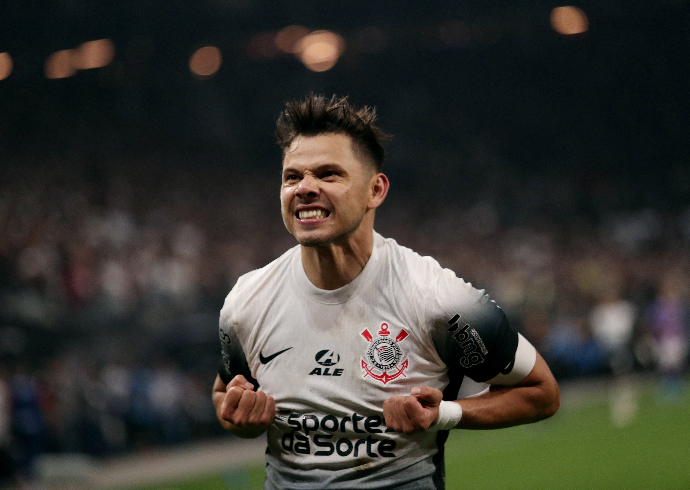
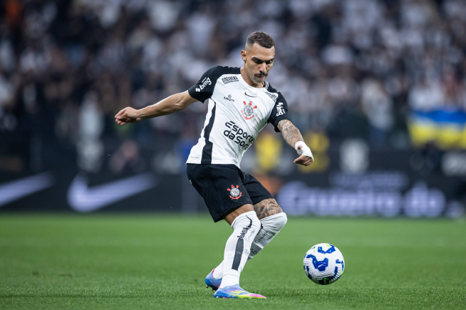

Historia do Corinthians
O Sport Club Corinthians Paulista foi fundado em 1º de setembro de 1910, por um grupo de operários no bairro do Bom Retiro, em São Paulo. O nome foi inspirado no Corinthian Football Club, da Inglaterra, que excursionava pelo Brasil na época. Ao longo de sua história, o clube se tornou um dos mais populares do país, conhecido por sua forte identidade popular e por ter uma das torcidas mais fiéis do mundo.
Jogadores
Os jogadores de futebol são importantes porque são a peça central do esporte, representando seus times e o país, além de servirem como ícones culturais e exemplos de dedicação, trabalho em equipe e superação. Eles são cruciais para o sucesso das equipes, alcançando objetivos como marcar gols e defender o território adversário. A importância se estende para além do campo, pois os jogadores influenciam positivamente a cultura, a economia e a motivação de fãs e jovens atletas.
Melhores jogadores Atualmente
Romero: 3° Lugar
Ángel Romero é um atacante paraguaio que se tornou um ídolo no Corinthians, sendo o maior artilheiro estrangeiro do clube e o maior artilheiro da Neo Química Arena. Ele é conhecido por sua identificação com a torcida, entrega em campo e conquistas como os Campeonatos Brasileiros de 2015 e 2017.
Melhores jogadores Atualmente
Matheuzinho: 2° Lugar
Matheuzinho é o apelido de Matheus França da Silva, lateral-direito do Corinthians, nascido em 8 de setembro de 2000. Ele se destaca pelo estilo de jogo ofensivo, sendo fundamental na criação de jogadas pelo lado direito, muitas vezes atuando com liberdade ofensiva em formações com três zagueiros. O jogador chegou ao clube em 2020 vindo do Londrina e, apesar de ter tido início de carreira com críticas, tem buscado se afirmar na equipe, focando em melhorar seu desempenho tanto técnico quanto mental.
Melhores jogadores Atualmente
Yuri Alberto: 1° Lugar
Yuri Alberto marcou seu primeiro gol pelo Peixe no dia 7 de março de 2018, na derrota por 2–1 contra o Novorizontino, válida pelo Campeonato Paulista. Tornou-se o sexto mais jovem a marcar pelo Santos em sua história, com 16 anos, 11 meses e 20 dias Estreou na Libertadores em 24 de maio, substituindo Vitor Bueno num empate em casa por 0–0 contra o Real Garcilaso. Depois de ganhar destaque durante a campanha de 2018, só conseguiu aparecer duas vezes sob o comando de Jorge Sampaoli em 2019. Em março de 2020, voltou ao time principal sob o comando do novo técnico, Jesualdo Ferreira, mas ainda rejeitou a renovação de contrato do clube e optou por deixar o Santos em julho de 2020.